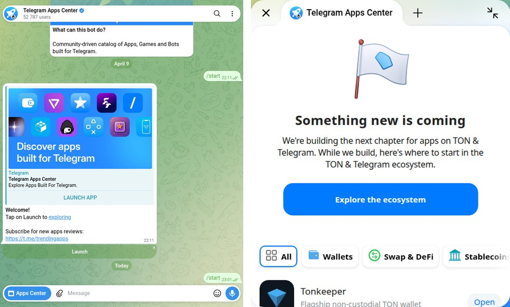

Telegram Bot Directories Tested: 6 of 16 Are Dead
Search for a Telegram bot directory and you get a list of directories. Some are websites, some are bots inside Telegram, and one, the Telegram Apps Center, is the place most guides send you first. I wanted to know two things: are these directories still running, and do the bots they put at the top of their lists still answer?
On 21 and 22 November 2026 I checked 16 directories and pressed /start on the first five bots each working one showed me, then went back on 23 November to check again. Six of the 16 were offline or never answered. The one most guides call official now shows a "Something new is coming" page full of crypto wallets instead of bots. And of the 23 listed bots I tried, 15 answered.
How I tested
I wrote the rules down before reading a single list, so the results couldn't bend them.
- Which directories. The top web results for four searches (telegram bot directory, telegram bot store, telegram bots list, telegram bot catalog), plus the directory bots Telegram's own search returns for bot list, bot store, bots catalog, bot directory, bot search and find bots, plus the Telegram Apps Center. Directories that only list channels and groups were left out.
- Which bots. The first five cards of each directory's main list, in the order the page shows them, with no picking. Featured and ad slots were noted apart and don't count toward the five. They answer a different question: who paid.
- What counts as alive. One
/startin a private chat and a 15-second wait. I pressed no buttons, joined nothing and paid for nothing. A day later I read every silent chat again to catch late answers. - What I didn't message. Bots whose own description says they hand out films, music or manga, a casino bot, and crypto wallets. They are counted as listed, and the reason is written next to each one.
- Pacing. At least 18 seconds between messages, and no more than 60 messages from the account in an evening.
The catalog everyone points to has stopped listing bots
The Telegram Apps Center runs as a bot, @tapps, with a Mini App behind its menu button. Its profile shows 52,787 users and describes it as a "community-driven catalog of Apps, Games and Bots built for Telegram". The same profile also says it is "not affiliated with Telegram Messenger", which is worth knowing because many guides call it the official store.
I first pressed /start there on 9 April 2026. It answered in the same minute with a "Discover apps built for Telegram" card and a Launch button. On 22 November I pressed it again, and nothing came back, not within 15 seconds and not when I opened the chat again 24 hours later.
The Mini App itself still opens. It shows a holding page: "Something new is coming. We're building the next chapter for apps on TON & Telegram. While we build, here's where to start in the TON & Telegram ecosystem." Below that is a list of 29 links. The first five are Tonkeeper, Wallet, My Wallet, STON.fi and DeDust: three wallets and two crypto exchanges. The rest are staking, lending, NFT marketplaces, block explorers and developer tools. There isn't a single game or chat bot in it.

/start got a welcome card; the November one got nothing.Telegram's own store has a loose end too. Its blog post of 31 July 2024 announced a "Mini App Store": the copy saved on 5 August 2024 says Telegram added "a new 'Apps' tab in Search which shows a list of apps you use and a list of popular mini apps", and that more than 500 million of its 950 million users used mini apps every month. The same post today still sits at an address ending in mini-app-store, but it is titled "Telegram Browser, Gifting Stars and More" and has no Mini App Store section. I didn't check the Apps tab in the phone apps, so I can't tell you whether it changed. I can only say the announcement did.
Six directories that are gone or silent
Bot directories are easy to launch and quiet to abandon. Six of the 16 gave me nothing at all:
- TeleHunt (telehunt.org), launched on Product Hunt in January 2026, returned a Cloudflare 522 error each time I tried: the origin server never answered.
- Telegram Bots Rating, which AlternativeTo still lists as "top 500 telegram bots sorted by number of chats", points to tgbots.io. That domain no longer resolves.
- AllBots Store (allbots.store) fails its HTTPS handshake. Plain HTTP returns an error code and nothing else.
- BotsBook (botsbook.com) is a "for sale" page now.
- Bot Hub (@bots_catalog_bot), which calls itself "the main catalog of bots" with 1,000+ entries, and the IVANOV catalog bot never answered
/start. A day later both chats were still empty.
Two more are only half there. StoreBot's bot, @storebot, still promises in its description a "Top Chart", "Best New" and "Recently Added". It didn't answer. Its website, storebot.me, loaded on 22 November and called itself "the world's largest bot directory", but its "Recently Added" list opened with a Bitcoin casino bot and a login bot called Telegram Passport. I messaged the four of those first five that weren't a casino. None answered, then or a day later. On the evening of 23 November the site itself didn't load at all, in a browser or from the command line. One bad night isn't proof a site is gone, so I haven't counted it among the six.
DirectoryTG's old bot now only says it "has a new bot" and links to @DirectoryTGApp. The new one works, but it opens with a weekly-digest signup rather than a list.
Two more never show a list until you type something: Telegram Directory's website (telegramdirectory.org) opens on "Submit Link" and "Featured Listing" offers, and the find_chats bot answers "Enter a word to search…". Three of the in-Telegram results only look like directories: one answers "Bot in development 😎", one is a channel-posting bot, and one is an empty Manybot shell. Four more had no description and never answered.
What the working directories list
Five directories still show a working list of bots on their front page, and StoreBot's website showed an old one on the night it still loaded. Here are the first five from each, as I found them on 22 November 2026.
| Directory | List I sampled | Answered /start | What stood out |
|---|---|---|---|
| FindMini.app | Most popular bots | 5 of 5 | Sorted by users: 35M, 16.5M, 6.7M, 4.5M, 4.2M. An ad row sits above it. |
| BotoStore | Bots, ordered by reply time | 4 of 5 | All five marked "Online". The first one's username doesn't exist. |
| BotsArchive | Top bots of all time | 3 of 3 tried | One says it has stopped working. No. 4 was taken down at Yandex's request. |
| tgdr.io | Top bots | 2 of 2 tried | Three of the five hand out films, music or manga by their own description. |
| Telegram Bot List | Alphabetical | 1 of 4 tried | One card has no Telegram link, one "bot" is a channel, and the bot that answered was promoting a token airdrop. |
| StoreBot.me | Recently added | 0 of 4 | The list looks years old. |
That's 30 listing slots across the six lists. Seven I didn't message: three film, music or manga bots, a video downloader, a casino, a bot already taken down and a card with no link. Of the 23 I tried, 15 answered, 5 stayed silent, 2 usernames no longer exist and 1 turned out to be a channel. Two of the 15 that answered no longer do what their card says.
Where the lists go wrong
"Online" doesn't mean online. BotoStore's header says "131.4k bots added · 131.4k checked · 17.5k online", and every card in its main list carries an "Online" badge. The first card, QuasarScamFighter, links to a username that Telegram says isn't taken by anyone. The other four answered, so BotoStore's checker is mostly right. It just isn't right about the bot it shows first. Its 131.4k also isn't a Telegram number: its own filter splits it into 25.4k Telegram bots, 105.9k Messenger bots and 72 ChatGPT ones.
"Top of all time" ages badly. BotsArchive's top five starts strong: Screenshot Generator Bot answered by name, and Master PollBot opened its menu. The second entry, KhChatGptRoBot, answered in Khmer that it has stopped working and sent me to a different bot. The fourth, a Yandex Music bot, now has a one-line description that reads, in Russian, "deleted at the request of BrandMonitor", and names BrandMonitor as Yandex's authorised representative. The fifth describes itself as a YouTube, TikTok and Instagram downloader, so I left it alone.
A card is not the bot. On Telegram Bot List, "AndreiSnake Bot" is filed under Utility as "cheap and accurate signals for traders". The bot itself answered /start with "Get $KAT token airdrop" and a referral link into another bot. BabelgramBot never answered, the AvaBot username no longer exists, and the card for "BAI" points to a Telegram channel, not a bot. The first card, Alpha Whale, a Polymarket copy-trading bot, has no Telegram link at all.
Small directories reflect their founders. tgdr.io is open source and tiny: 84 bots against 221 channels. Four of its five "Top Bots" are anime or media bots. The first describes itself as a bot "to search, read, watch and download One Piece", one is a file-search bot run from a channel called NoCopyRightMovies, and one serves music "from Deezer, Spotify, SoundCloud, VK". The two I did message answered. One is a group-management bot named after an anime character. The other offers cartoons sorted by language.
None of this is unusual for Telegram as a whole. In March 2026 researchers published "A Large-Scale Study of Telegram Bots", built from 32,000 bots they found and interacted with automatically. Alongside useful ones, they report bots working as payment gateways, referral systems and fronts for illicit services. Directories that take submissions for free and check only whether a bot is online will list those too.
Which one to use
If you want a directory, use FindMini.app. All five of its most popular bots answered, and its ranking is sorted by user counts rather than by who submitted last. The catch is that a ranking by users is a ranking of giants: Spam Info Bot, Foursquare, Premium Bot, Yandex's image search and Save As Bot are not discoveries. For something smaller, BotoStore was right about four of five and lets you filter by platform and category.
Two habits help more than any directory:
- Look at the user count before you press Start. Telegram shows a bot's users under its name in the chat header, as in the screenshot above. It's the bot's monthly active users, counted by Telegram, so a directory can't inflate it. Small bots show no count at all, which is normal. A card boasting big numbers for a bot with no count is not.
- Search Telegram directly. Telegram's global search returns bots by name and description; every in-Telegram directory in this test came from it. For a specific job, searching for the job in Telegram is faster than browsing a catalog that may not have been updated in a year.
And if a directory has a "Recently Added" list whose newest entries you recognise from years ago, it isn't recent. Close it.
Questions
What is the best Telegram bot directory in 2026?
In my November 2026 test, FindMini.app was the only directory whose first five listed bots all answered /start, and it sorts bots by user count. BotoStore came second with four of five. Six of the 16 directories I checked were offline or silent.
Is the Telegram Apps Center still working?
Its Mini App opens, but on 22 November 2026 it showed a "Something new is coming" page with 29 TON wallets, exchanges and tools instead of a catalog of apps, games and bots. Its bot, @tapps, didn't answer /start, although it did in April. Its profile says it is not affiliated with Telegram Messenger.
What happened to StoreBot?
@storebot didn't answer /start, even a day later. The storebot.me website loaded on 22 November 2026 and didn't load on 23 November. None of the four bots I messaged from its "Recently Added" list answered either.
How do I find Telegram bots without a directory?
Type what you need into Telegram's global search. It returns bots whose name or description matches. Before pressing Start, check the monthly-user count Telegram shows under the bot's name.
A bot that doesn't need a directory
The free Party Game runs Truth or Dare, Never Have I Ever and Would You Rather as a Mini App inside Telegram, in English or Ukrainian. No signup and no wallet.
Open the Party Game Want lists I tested myself? See the fun bots I tried.